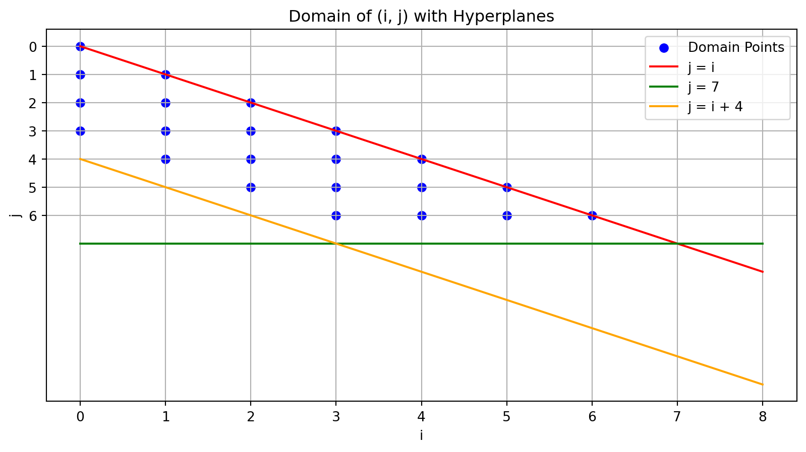

polyhedral analysis - given a loop transform, does the behavior change- Is it valid?
polyhedral scheduling - find a transform that maximizes/minimizes some property
Base Idea
The base ideas -
A statement in a loop might execute a lot of times. Each time it executes there is one instance of the statement. Polyhedral methods keep track of instances.
We can think of a program as having two parts: An algorithm, like \[ a[i] = 3, i \in \{1,2,3\}\] and a schedule like: execute the instances in reverse order.
poly steps
change the program into a polyhedral notations (a set like notation)
Apply some kind of transformations to add a schedule
Generate code that lets the result execute on a computer
Polyhedral Methods
Use equations as an intermediate representation (IR)
Allow reasoning about each instance
Ensure finiteness (even if the number of instances is not)
Reduce phase ordering issues by applying multiple transformations simultaneously
Ideal for tiling, parallelism, and cache management
Negatives of Polyhedral Analysis
Only applies to loop nests, but we can wrap a for (i= 0; i <1; i++) around a group of statements
Requires affine array indexes, bounds, and statements
Not applicable to loops hidden by recursion
an example changing the order of iterations
can we reverse this loop: (change the schedule so that i takes values 4,3,2,1). Does it get the same answer
for i = [1,2,3,4]
s: a[i] = a[i-1]
Do these loops do the same thing
for i = [1,2,3,4] for i = [4,3,2,1]
s: a[i] = a[i-1] s: a[i] = a[i-1]
A transformation is valid (legal) if it preserves the dependence relations: producers have to execute before consumers
it is not valid if there is a pair s[i] and s[j], s[i] produces a value s[j] reads that value, s[j] is first in the new schedule
a graphical view
(not legal if there is a pair where the arrows go in opposite directions)
Code
import matplotlib.pyplot as pltimport matplotlib.ticker as ticker# Define the range of the loopsn =4# Range for 'i' (1 to 4)# Create lists to hold the iteration pointsi_values = []j_values = []# Nested loops to generate iteration spacefor i inrange(1, n +1): i_values.append(i) j_values.append(1)# Plotting the iteration spaceplt.figure(figsize=(6, 3))plt.scatter(i_values, j_values, c='blue', marker='o')plt.xlabel('i loop index)')plt.title('Iteration Space with Data Flow')plt.grid(True)plt.gca().invert_yaxis()plt.gca().xaxis.set_major_locator(ticker.MaxNLocator(integer=True))#plt.gca().yaxis.set_ticklabels([])# Annotate the iteration order and add arrows for data flowfor i inrange(2, n +1): plt.annotate('', xy=(i,1), xytext=(i-1,1), arrowprops=dict(facecolor='black', shrink=0.05))plt.annotate("time left schedule", xy=(n, 1.02), xytext=(1,1.02), arrowprops=dict(facecolor='green', shrink=0.05))plt.annotate("time right schedule", xy=(1, 1.04), xytext=(n-1,1.04), arrowprops=dict(facecolor='red', shrink=0.05))# Show the plotplt.show()
There are 3 pairs that make this invalid
a second example
for i in [1,2,3,4]
for j in [1,2,3,4]
a[i,j] = a[i,j-1]+ a[i-1,j]
can we execute this is parallel
Code
import matplotlib.pyplot as pltimport matplotlib.ticker as ticker# Define the range of the loopsn =4# Range for 'i' (1 to 4)# Create lists to hold the iteration pointsi_values = []j_values = []# Nested loops to generate iteration spacefor i inrange(1, n +1):for j inrange(1, n +1): i_values.append(i) j_values.append(j)# Plotting the iteration spaceplt.figure(figsize=(6, 4))plt.scatter(i_values, j_values, c='blue', marker='o')plt.xlabel('i loop index)')plt.ylabel('j loop index')plt.title('Iteration Space with Data Flow')plt.grid(True)plt.gca().invert_yaxis()plt.gca().xaxis.set_major_locator(ticker.MaxNLocator(integer=True))plt.gca().yaxis.set_major_locator(ticker.MaxNLocator(integer=True))#plt.gca().yaxis.set_ticklabels([])# Annotate the iteration order and add arrows for data flowfor i inrange(2, n +1):for j inrange(2, n +1): plt.annotate('', xy=(i,j), xytext=(i-1,j), arrowprops=dict(facecolor='black', shrink=0.05)) plt.annotate('', xy=(i,j), xytext=(i,j-1), arrowprops=dict(facecolor='black', shrink=0.05))# plt.annotate("time left schedule", xy=(n, 1.02), xytext=(1,1.02), arrowprops=dict(facecolor='green', shrink=0.05))# plt.annotate("time right schedule", xy=(1, 1.04), xytext=(n-1,1.04), arrowprops=dict(facecolor='red', shrink=0.05))# Show the plotplt.show()
original code: time goes down each column
run diagonal order and could tile the loops
definitions
an affine function
\[
\text { affine function } f(\vec{v})=M_{f} \vec{v}+\vec{f}_{0}
\]
where \(\vec{v}=\left(\begin{array}{c}v_{1} \\ \vdots \\ v_{d}\end{array}\right)\) and \(M_{f} \in \mathbb{R}^{k \times d}\) is a matrix with \(k\) rows and \(d\) columns, \(f_{0} \in \mathbb{R}^{k}\) is a \(k\)-dimensional vector. In all cases, we deal with affine functions with \(M_{f} \in \mathbb{Z}^{k \times d}\) and \(f_{0} \in \mathbb{Z}^{k}\). The domain is also a set of integers: \(\vec{v} \in \mathbb{Z}^{d}\).
Perfect loop nest, Imperfect loop nest. A set of nested loops is called a perfect loop nest iff all statements appearing in the nest appear inside the body of the innermost loop. Otherwise, the loop nest is called an imperfect loop nest.
Affine loop nest. Affine loop nests are sequences of imperfectly nested loops with loop bounds and array accesses that are affine functions of outer loop variables and program parameters.
Program parameters or structure parameters are symbolic constants that appear in loop bounds or access functions. They very often represent the problem size. \(N\) and beta are the program parameters.
for (i=0 ; i<N ; i++)
for (j=0 ; j<N ; j++)
S1: A[i,j]=A[i,j]+ u1[i] * v1[j]+u2[i] * v2[j] ;
for $(k=0 ;k<N; k++ )
for (l}=0 ; l<N ; l++)
S2: x[k]=x[k]+beta*A[l,k] *y[l] ;
A portion of the GEMVER kernel
Affine spaces. A set of vectors is an affine space iff it is closed under affine combination, i.e., if \(\vec{x}, \vec{y}\) are in the space, all points lying on the line joining \(\vec{x}\) and \(\vec{y}\) belong to the space.
Affine hyperplane An affine hyperplane is an \(n-1\) dimensional affine sub-space of an \(n\) dimensional space.
In our context, the set of all vectors \(v \in \mathbb{Z}^{n}\) such that \(\mathbf{h} . \vec{v}=k\), for \(k \in \mathbb{Z}\), forms an affine hyperplane. The set of parallel hyperplane instances correspond to different values of \(k\) with the row vector \(\mathbf{h}\) normal to the hyperplane. Two vectors \(\overrightarrow{v_{1}}\) and \(\overrightarrow{v_{2}}\) lie in the same hyperplane if \(\mathbf{h} \cdot \overrightarrow{v_{1}}=\mathbf{h} \cdot \overrightarrow{v_{2}}\).
An affine hyperplane
Polyhedron, Polytope. A polyhedron is an intersection of a finite number of half-spaces. A polytope is a bounded polyhedron.
Each of the half-spaces provides a face to the polyhedron. Hence, the set of affine inequalities, each representing a face, can be used to compactly represent the polyhedron. If there are \(m\) inequalities, then the polyhedron is
\[
\left\{\vec{x} \in \mathbb{R}^{n} \mid A \vec{x}+\vec{b} \geq \overrightarrow{0}\right\}
\]
where \(A \in \mathbb{R}^{m \times n}\) and \(\vec{b} \in \mathbb{R}^{m}\).
In our context, we are always interested in the integer points inside a polyhedron since loop iterators typically have integer data types and traverse an integer space. The matrix \(A\) and \(\vec{b}\) for problems we will deal with also comprise only integers. So, we always have:
where \(A \in \mathbb{Z}^{m \times n}\) and \(\vec{b} \in \mathbb{Z}^{m}\).
Iteration vector. The iteration vector of a statement is the vector consisting of values of the indices of all loops surrounding the statement.
Let \(S\) be a statement of a program. The iteration vector is denoted by \(\vec{i}_{S}\). An iteration vector represents a dynamic instance of a statement appearing in a loop nest that may be nested perfectly or imperfectly.
Domain, Index set. The set of all iteration vectors for a given statement is the domain or the index set of the statement.
A program comprises a sequence of statements, each statement surrounded by loops in a given order. We denote the domain of a statement \(S\) by \(\mathcal{D}^{S}\). When the loop bounds and data accesses are affine functions of outer loop indices and other program parameters, and all conditionals are statically predictable, the domain of every statement is a polyhedron as defined in (. Again, conditionals that are affine functions of outer loop indices and program parameters are statically predictable.
Each dynamic instance of a statement \(S\), in a program, is identified by its iteration vector \(\vec{i}_{S}\) which contains values for the indices of the loops surrounding \(S\), from outermost to innermost. A statement \(S\) is associated with a polytope \(\mathcal{D}^{S}\) of dimensionality \(m_{S}\). Each point in the polytope is an \(m_{S}\)-dimensional iteration vector.
for (i=0 ; i<N ; i++)
for (j=0 ; j<N ; j++)
S1: A[i,j]=A[i,j]+ u1[i] * v1[j]+u2[i] * v2[j] ;
for $(k=0 ;k<N; k++ )
for (l}=0 ; l<N ; l++)
S2: x[k]=x[k]+beta*A[l,k] *y[l] ;
Two instances are dependent if they access the same location and one of them is a write.
true dependence producer is a write, consumer is a read. Also called read after write to RAW, also called a flow dependence
anti dependence write after read. WAR
*output dependence both writes WAW
dependence in example
for (i=0 ; i<N ; i++)
for (j=0 ; j<N ; j++)
S1: A[i,j]=A[i,j]+ u1[i] * v1[j]+u2[i] * v2[j] ;
for (k=0 ;k<N; k++ )
for (l=0 ; l<N ; l++)
S2: x[k]=x[k]+beta*A[l,k] *y[l] ;
A[i,j] same location as A[l,k]
i between 0 and N
j between 0 and N
k between 0 and N
l between 0 and N
i - l == 0
j - k == 0
Domain for statement S1
loop interchange example
for (i = 0, i < 9; i++)
for (j = i; j < 7 && j < i+4; j++)
a[i,j] =
There is no dependence so we can reorder the loops but what are the new bounds
Code
import matplotlib.pyplot as pltimport numpy as np# Initialize the coordinates for the domaindomain_i = []domain_j = []# Loop through the values as described in the pseudocodefor i inrange(9): # i = 0 to 8for j inrange(i, min(7, i +4)): # j starts from i, and is less than both 7 and i+4 domain_i.append(i) domain_j.append(j)# Plot the domain pointsplt.scatter(domain_i, domain_j, color='blue', label='Domain Points')# Define the range for i and j for the hyperplanesi_values = np.arange(0, 9)j_values_i = i_values # j = ij_values_7 = np.full_like(i_values, 7) # j = 7j_values_i_plus_4 = i_values +4# j = i + 4# Plot the hyperplanesplt.plot(i_values, j_values_i, label='j = i', color='red')plt.plot(i_values, j_values_7, label='j = 7', color='green')plt.plot(i_values, j_values_i_plus_4, label='j = i + 4', color='orange')# Set plot propertiesplt.title('Domain of (i, j) with Hyperplanes')plt.xlabel('i')plt.ylabel('j')plt.grid(True)plt.xticks(range(9))plt.yticks(range(7))plt.gca().invert_yaxis() # Invert y-axis to match matrix notationplt.legend()plt.show()

reodered loops
for (j = 0; j <=6; j++)
for (i = max(j-3,0); i <= j; i++)
a[i,j] = 0
outloop bounds cannot depend on i
inner loop bounds can depend on j
We can read off j as a proection, for each value of j, i is a convex polygon (if the bounds were not convex this would be false)
fourier-motzkin method
input:
A convex polygon S on \(x_1, x_2, ... x_n\)
A variable \(X_m\) to be eliminated
output: \(S^1\) a projection of S with out dimiension \(m\)
alogorithm
\[ S = \{ vec(x) | B vec(x) + vec(f) \ge 0 \}\]\[C\] = constraints in S that involve \(S_m\) (coef is not zero)
-=======================
How much of a limitation is affine only
99% of hpc loops are affine C. Bastoul, A. Cohen, S. Girbal, S. Sharma, and O. Temam. Putting polyhedral loop transformations to work. In LCPC, 2003.
over 95% of loops in deep learning are affine Norman P Jouppi, Cliff Young, Nishant Patil, David Patterson, Gaurav Agrawal, RaminderBajwa, Sarah Bates, Suresh Bhatia, Nan Boden, Al Borchers, et al. 2017. In-datacenter performance analysis of a tensor processing unit. In 2017 ACM/IEEE 44th Annual International Symposium on Computer Architecture (ISCA). IEEE, 1–12.
Over the course of this, I’ll use 3 pieces of math
ILP integer linear programming find a set of integers that satisfies a set of inequalities and maximize something
fourier-motzkin method
The affine form of Farkas Lemma (maybe)
Here is a graph showing the data flow
::: {#61929fbb .cell execution_count=4}
``` {.python .cell-code}
import matplotlib.pyplot as plt
import matplotlib.ticker as ticker
# Define the range of the loops
n = 4 # Range for 'i' (1 to 4)
# Create lists to hold the iteration points
i_values = []
j_values = []
# Nested loops to generate iteration space
for i in range(1, n + 1):
i_values.append(i)
j_values.append(1)
# Plotting the iteration space
plt.figure(figsize=(6, 3))
plt.scatter(i_values, j_values, c='blue', marker='o')
plt.xlabel('i loop index)')
plt.title('Iteration Space with Data Flow')
plt.grid(True)
plt.gca().invert_yaxis()
plt.gca().xaxis.set_major_locator(ticker.MaxNLocator(integer=True))
plt.gca().yaxis.set_ticklabels([])
# Annotate the iteration order and add arrows for data flow
for i in range(2, n + 1):
plt.annotate('',
xy=(i,1), xytext=(i-1,1),
arrowprops=dict(facecolor='black', shrink=0.05))
# Show the plot
plt.show()
:::
We need to preserve order where an instance produces a value, some other instance consumes the value
more formally:
The order that statements execute is called a *schedule
each s(i) is an instance of a single statement
data dependence is a mapping: \(s(i) => s(i+1)\)
a valid schedule does not violate data dependence
observation 1- same set of instances
if we track each instance, we have more info but could run out of space
we need a more compressed ir format, polyhedral methods use sets and math
some notation
\[
\begin{align*}
domain &= \left\{ i \in \mathbf{Z}^1 \mid 1 <= i <= 4\right\} \\
instances\ of \ s &= \left\{ s(i) \mid 1 <=i <= 4\right\}
\end{align*}
\]
The domain is the set of integer values of the loop index. left and right have the same domain
We call the order that instances execute the schedule The schedule is the ordering of instances. this is a map of instance to time.
observation 2- different schedules. instance -> time
\[
\begin{align*}
left \ schedule &= \left\{ s[i] \rightarrow i \right\} \\
right \ schedule &= \left\{ s[i] \rightarrow 5-i \right\}
\end{align*}
\]
data dependences (just the same as before but with bounds) \[
dependence = \left \{(s(i), s(i+1)) \mid 1<= i <= 3 \right \}
\]
New schedule is legal, if it respects all data dependences, or set of violated data dependences is empty
what is a violated data dependence
a pair (p, c) where p produces data that c consumes and c comes before p in the new schedule
data dependence \[
\left \{(s(i), s(i+1)) \mid 1 \le i \le 3 \right \}
\]
set of violated data dependences \[
\left \{(s(i), s(j)) \mid \ newSch(j) \ge newSch(i) \right \}
\]
Dependence is \(s[i] -> s[i+1]\)
set of violated data dependences \[
\left \{(s(i), s(j)) \mid \ newSch(j) \ge newSch(i) \right \}
\]
constrants are : \[
\begin{align*}
1<= i <= 3 \\
5-i +1 >= 5-i
\end{align*}
\]
Use an ilp solver to find a solution one solution is i = 1
ilp solver info
can an ilp solver always work?
Hilbert’s tenth problem is the tenth on the list of mathematical problems that the German mathematician David Hilbert posed in 1900. It is the challenge to provide a general algorithm that, for any given Diophantine equation (a polynomial equation with integer coefficients and a finite number of unknowns), can decide whether the equation has a solution with all unknowns taking integer values.
sadly answer is no (found in 1970)
But we can do this if we limit the kinds of inequalities
Affine limitations
affine functions, no multiplying unknowns, no quantifiers (for all, or exists) and is ok, or ok (if we change to two problems) just add/subtract/ multiply by a constant, can add minimize/maximize a function. division and remainder by a constant, max/min/ absolute
Most scientific programs and ai programs fit, because array subscripts are often affine
But lots of other kinds of programs do not.
There is a lot of formal math background here, decidability in logic.
ilp is np-complete so it is slow, but often tractable for problems with up to several hundred variables.
Some compiler writers feel that means can only do this for toy programs? What do you think?
2 multiple dimensions
for (i=1; i<=n; i++)
for (j=1; j<=n; j++)
S: A[i][j] = (A[i-1][j] + A[i][j-1]) * 0.5;
Code
import matplotlib.pyplot as pltimport matplotlib.ticker as ticker# Define the range of the loopsn =4# You can change n to any desired value# Create lists to hold the iteration pointsi_values = []j_values = []# Nested loops to generate iteration spacefor i inrange(1, n +1):for j inrange(1, n +1): i_values.append(i) j_values.append(j)# Plotting the iteration spaceplt.figure(figsize=(5, 5))plt.scatter(i_values, j_values, c='blue', marker='o')plt.xlabel('i (outer loop index)')plt.ylabel('j (inner loop index)')plt.title('Data Dependence for A[i][j] = (A[i-1][j] + A[i][j-1]) * 0.5')plt.grid(True)plt.gca().invert_yaxis()# Annotate the iteration order and add arrows for data dependenciesfor i inrange(1, n +1):for j inrange(1, n +1):if i >1: # Dependency on A[i-1][j] plt.annotate('', xy=(i, j), xytext=(i-1, j), arrowprops=dict(facecolor='black', shrink=0.05))if j >1: # Dependency on A[i][j-1] plt.annotate('', xy=(i, j), xytext=(i, j-1), arrowprops=dict(facecolor='black', shrink=0.05))# Force the x-axis to use integer labels and remove y-axis labelsplt.gca().xaxis.set_major_locator(ticker.MaxNLocator(integer=True))plt.gca().yaxis.set_major_locator(ticker.MaxNLocator(integer=True))#plt.gca().yaxis.set_ticklabels([]) # Turn off y-axis labels# Show the plotplt.show()
The schedule actually goes up each column (the j values) going over the columns left to right (the i column)
notice that this does not execute in parallel, but it could if pick a different schedule
Code
import matplotlib.pyplot as pltimport matplotlib.patches as patchesimport matplotlib.ticker as tickerplt.figure(figsize=(8, 8))tile_size =1# # Define parameters# n = 12 # Size of the matrix# tile_size = 2 # Size of the tile# Create lists to hold the iteration pointsi_values = []j_values = []# Calculate iteration points for tilesfor t inrange(8):for p inrange(8): i = p + t j = pif i >=8:continueif (i >=0and j >=0) : i_values.append(i) j_values.append(j)if i <= j:continueif ((t %2) ==0) and (p %2 ) ==0: plt.gca().add_patch( \ patches.Rectangle((t,p), tile_size, tile_size, \ linewidth=1, edgecolor='red', facecolor='none'))# for i in range(ti, min(ti + tile_size, n + 1)):# for j in range(tj, min(tj + tile_size, n + 1)):# if (i > 1 and j > 1) :# i_values.append(i)# j_values.append(j)# # Plotting the iteration spaceplt.scatter(i_values, j_values, c='blue', marker='o', label='Iterations')plt.xlabel('i')plt.ylabel('j')plt.title('Iteration Space with Tiling and Dependencies')# plt.grid(True)#lt.gca().invert_yaxis()# # Draw a box around each tile# for ti in range(1, n + 1, tile_size):# for tj in range(1, n + 1, tile_size):# plt.gca().add_patch(# patches.Rectangle((ti, tj), tile_size, tile_size,# linewidth=1, edgecolor='red', facecolor='none')# )# # Draw dependencies# for i in range(1, n + 1):# for j in range(1, n + 1):# if i > 1: # Dependency on A[i-1][j]# plt.annotate('',# xy=(i, j), xytext=(i-1, j),# arrowprops=dict(facecolor='black', shrink=0.05))# if j > 1: # Dependency on A[i][j-1]# plt.annotate('',# xy=(i, j), xytext=(i, j-1),# arrowprops=dict(facecolor='red', shrink=0.05))# # Force the x-axis and y-axis to use integer labels# plt.gca().xaxis.set_major_locator(ticker.MaxNLocator(integer=True))# plt.gca().yaxis.set_major_locator(ticker.MaxNLocator(integer=True))# # Show the plot# plt.legend()plt.show()
t p i j 0 0 0 0 1 0 1 0 1 1 0 1 t-p p 2 1 1 1 2 2 0 2
## formalizing the schedule, Lexicographic ordering
schedule s(i,j) -> (i,j)
statements -> vector (should be a time)
How do we interpret a vector as a time, e.g. hours, min, seconds.
Usually written as $\gg $ Generalization of alphabetical order
$$
(i,j) \gg (m,n) \iff i > m \lor (i=m \land j> n)
$$
Compare left to right if terms are equal, go to next term, or different so compare the terms
Notice the or we will need to call the ilp solver more than once
Checking for loop interchange
for i in [1,2,3,4] for j in [1,2,3] for j in [1,2,3] for i in [1,2,3,4] s: a(i,j) = a(i-1,j+1) a(i,j) = a(i-1,j+1)
s(i, j) -> (i,j) s(i,j)=(j,i)
data flow
read write
s(1,1) a(0,2) a(1,1)
s(1,2) a(0,3) a(1,2)
s(1,3) a(0,4) a(1,3)
s(1,4) a(0,5) a(1,4)
s(2,1) a(1,2) a(2,1) s(1,2)-> s(2,1)
s(2,2) a(1,3) a(2,2) s(1,3)-> s(2.2)
...
s(i,j) writes a value that is consumed in s(i+1, j-1)
$$
s(i,j) \rightarrow s(i+1, j-1)
$$
constants:
Does there exist a statement s(i,j) and a statement $s(i',j')$
where in the new schedule $s(i',j')$ executes first and data flows backward in time
$$
\begin{align*}
(i', j') \gg (j,i) &\text{ $i',j'$ is first} \\
i' = 1+ i &\text{ data\ from \ i+1 to $i'$}\\
j' = -1 +j &\text{ data\ from \ j-1 to $j'$}\\
1 \le i \le 4 \\
1 \le j \le 3 \\
1 \le i' le 4 \\
1 \le j' \leftrightarrows 3
\end{align*}
$$
because of the lexicographic order ( or) we have two ilp problems
one where $i'$ is greater then j, and one where $i'$ = j, and the other where $j'$ > j
i ran it through:
https://online-optimizer.appspot.com
which gave me a solution
s(4,2) reads s(3,3) but s(4,2) executes first
## ir
How do we represent these sets in the ir?
~~~
for i in [0,1,2,3,4,5]
for j from i to 7
a(i,j) = 0
~~~
change the equations around so that they are ... $\ge 0$
$$
\begin{align*}
i \ge 0 &\rightarrow i \ge 0 \\
i \le 5 &\rightarrow -i + 5 \ge 0 \\
j \ge i &\rightarrow -i + j \ge 0 \\
j \le 7 &\rightarrow =j+7 \ge 0
\end{align*}
$$
We can split off the constraints:
$$
constraints = \left\{ \vec{x} \mid B\vec{x} + \vec{b} >= 0\right\}
$$
Where:
$$
\begin{equation*}
B =
\begin{bmatrix} \begin{array}{rr}
1 & 0 \\
-1 & 0 \\
-1 & 1 \\
0 & -1
\end{array} \end{bmatrix}
\vec{b} =
\begin{bmatrix}
0 \\
5 \\
0 \\
7
\end{bmatrix}
\vec{x} =
\begin{bmatrix}
i \\
j
\end{bmatrix}
\end{equation*}
$$
This also works if the loop bounds are symbolic
for i=0; i < 7, i++ for j =i, j < min(7, i+4), j++ a(i,j) = 0

shaded area is the polygon
what are the loop bounds if we interchange the loops?
What are the upper and lower bounds if we interchange the loops?
inequalities
$$
\begin{align*}
i \ge 0 & \rightarrow i \ge 0 \\
i \le 6 & \rightarrow -i+6 \ge 0 \\
j \ge i & \rightarrow j-i \ge 0 \\
j \le 6 & \rightarrow 6 -j \ge 0 \\
j \le i+3 & \rightarrow -j+i+3 \ge 0
\end{align*}
$$
for j (must be constants) for j (constants and j )
we can get the j bounds by projecting onto the j axis, next we want to remove j from the inequalities
ir constants
$$
\begin{align*}
B =
\begin{bmatrix} \begin{array}{rr}
1 & 0 \\
-1 & 0 \\
-1 & 1 \\
0 & -1 \\
1 & -1
\end{array} \end{bmatrix}
\vec{b} =
\begin{bmatrix}
0\\
6 \\
0\\
6\\
3
\end{bmatrix}
\end{align*}
$$
written for i
$$
\begin{align}
0 \le & i & \\
& i &\le 6 \\
& i & \le j \\
& & 6 -j \ge 0 \\
j -3 \le & i &
\end{align}
$$
$ i \le max(0, j-3) \land i \le min(6,j) $
written for j
$$
\begin{align}
& & i \ge 0 \\
& & i \le 6 \\
i \le &j & \\
& j & \le 6 \\
&j& \le i+3
\end{align}
$$
bounds for j depend on i - We need to remove i
math thing #2 fourier-motzkin method
https://people.math.carleton.ca/~kcheung/math/notes/MATH5801/02/2_1_fourier_motzkin.html
Given a set of inequalities remove one variable, (for higher dim d, need to do this multiple times)
in general
Suppose we want to remove $x_m$ we find a pair $L \le c_1 * x_m $ and upper bound $x_2 * x_m \ge U$ and both c's are >= 0
remove x_m and add $c_2* L \ge c_1 *U $
We start with each pair of constants
$$
c_1 * i < U \land
c_2 *i > L
$$
there are 4 pairs (1,2), (1,3) , (2,5), (3,5)
all the c's are 1
from the ir column 1 (i column) ignore zeros, pair up plus and minus values
We need to eliminate i (to get the bounds for the outer loop in j)
we have 4 inequalities where i is not multiplied by zero $ j \le 6$
we consider each pair
$$
\begin{align*}
(1,2) \rightarrow 0 &\le 6 \ done \\
(1,3) \rightarrow 0 &\le j\\
(2,5) \rightarrow j-3 &\le 6\\
(3,5) \rightarrow j-3 &\le j \ done
\end{align*}
$$
bounds for j are 0 to 6
for j =0 ; j <= 6 , j++ for i = max(j-3,6), i < j; i++>
a[i,j] = 0
## suppose we want to run the an example in parallel
~~~
for i in [1,2,3,4]
for j in [1,2,3, 4]
s: a(i,j) = a(i-1, j+1)
~~~
reorder to run in parallel get new bounds, we want to run diagonally $k= i-j$, we know the transformation that we want
We replace $i = k+j $
for k = ??
for j = ??
s: a(j-k,j) = a(j-k-1, j+1)
$$
\begin{align*}
1 \le i \le 4 \\
1 \le j \le 4 \\
\end{align*}
$$
$$
\begin{align*}
1 \le & k+j &\le 4 \\
1 \le & j &\le 4 \\
\end{align*}
$$
$$
\begin{align*}
1-k \le j \le 4-k \\
1 \le j <= 4
\end{align*}
$$
now for mf
$$
\begin{align*}
1-k \le 4-k \\
1-k \le 4\\
1 \le 4-k \\
1 \le 4
\end{align*}
$$
giving k bounds -3 to 3
j bound are max(1,1,k) yo min(4, 4-k)
# 4 Scheduling
Up till now we assumed we know the transformation but now we consider
can we find a schedule that is good in some way
an example
for i in [0,1,2,3,4,5] P: a(i) = input(i) +1 for j in [0,12,3,4,5] c: b(j) = a(j) +2
This is not quite a loop nest - unless we picture an outer loop running one time.
The new schedule has to be affine (restriction)
schedule is a map from instances to time
$$
P(i) = sp*i + dp \\
C(j) = sc*j + dc
$$
optimization pick sp, dp, sc, dc that optimizes the locality.
constraint is for all i,j, p(i) writes data that c(j) reads, and i,j are in bounds
For any legal schedule:
$$
\forall i,j \mid 0 \le i \le 5 \land 0 \le j \le 5 \land i = j
\land sp * i + dp \le sc * j + dc
$$
different values of sp, dp, sc, and dc give different schedules.
Since all these schedules are affine - None on them is the "best".
Some non-affine schedule might be better.
This is not suitable for ilp, because of the $ sp * i $
Suppose we want to select one of the schedules that minimizes a cost function:
$$
w(i,j) = sc * j + dc - sp * i + dp
$$
w is the time the value is needed
How we select a legal schedule that has the smallest w?
math fact 3
The affine form of Farkas Lemma
An affine function non-negative everywhere inside a polygon
iff its non-negative at all the vertices
$$
given:
\forall \vec{x} \mid \left\{ \vec{x} \mid B\vec{x} + \vec{b} >= 0\right\}
S^T \vec{x}+\vec{d} \ge 0
$$
if and only if
$$
\exists p_0, \vec{p} \ge 0 \mid \forall \vec{x}\mid S^T \vec{x} + \vec{d} = (\vec{p})^t(B\vec{x}+\vec{d}) + p_0
$$
What does this mean and how does it help?
Code
import matplotlib.pyplot as pltfrom matplotlib.patches import Arcfig, ax = plt.subplots(figsize=(5,5))# Define the range of the loopsn =4# Range for 'i' (1 to 4)# Create lists to hold the iteration pointsi_values = []j_values = []# Nested loops to generate iteration spacefor i inrange(1, n +1): i_values.append(i) j_values.append(1) arc = Arc(xy=(i+.5, 1), width=1, height=1, angle=0, theta1=0, theta2=180, color='red', lw=2) ax.add_patch(arc)ax.set_ylim(0,2)# Plotting the iteration spaceplt.scatter(i_values, j_values, c='blue', marker='o')plt.xlabel('i (outer loop index)')plt.ylabel('j (inner loop index)')plt.title('Iteration Space with Data Flow')plt.grid(True)plt.gca().invert_yaxis()# # Annotate the iteration order and add arrows for data flow# for i in range(1, n + 1):# for j in range(2, m + 1): # Start from j=2 since j-1 needs to exist# plt.annotate('',# xy=(i, j), xytext=(i, j-1),# arrowprops=dict(facecolor='black', shrink=0.05))# Show the plotplt.show()